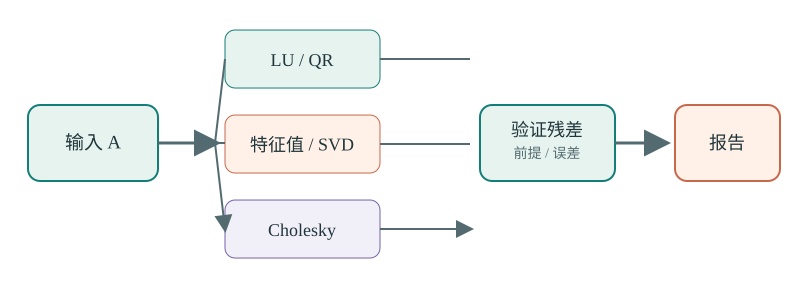

让矩阵分解
可以亲手验证。
输入一个 2×2 或 3×3 实矩阵。实验室会计算带部分选主元的 LU、Modified Gram–Schmidt QR、对称特征值、Cholesky 和奇异值，并报告适用条件。
统一入口
输入矩阵
每行输入一行元素，使用空格或逗号分隔。仅支持方阵 2×2 或 3×3；小数可用十进制表示。
默认示例是实对称正定矩阵。可尝试把第一行第一列改成 0，观察 LU 的行交换；或输入非对称矩阵，观察对称特征值与 Cholesky 检查被跳过。
计算报告
等待计算。默认矩阵的计算结果将在点击“计算并验证”后显示。

实验室在做什么
- LU：部分选主元，返回 P、L、U，并检查 PA−LU 的残差。
- QR：Modified Gram–Schmidt，检查 QᵀQ 是否接近单位矩阵，以及 QR−A 的残差。
- 对称特征值：仅当 A≈Aᵀ 时运行 Jacobi 旋转；输出排序后的实特征值。
- Cholesky：仅对对称正定矩阵执行 A=LLᵀ。
- SVD：通过 AᵀA 的对称特征问题计算奇异值；说明这是教学规模算法，不替代生产级数值库。
数值容差用于判断浮点近似相等；“接近零”不等于符号计算中的严格等于零。大型、稀疏或病态矩阵应使用专业数值线性代数库。